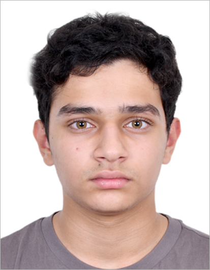

I’m a student and beginner web developer focused on front-end development.
My main skills include HTML, CSS, Java, and responsive design.
I enjoy turning ideas into functional layouts and paying attention to small details that improve user experience.
I’m currently learning C programming more deeply and exploring and enjoying coding a lot. I use Visual Studio Code for all coding.
Outside of coding, I enjoy learning new tech concepts, solving problems, and building projects that challenge me to grow.
I was born in the United States of America, making me an American Citizen but I have lived in Pune since the age of 2.
I studied in ICSE Board from the start making me fluent in English and Hindi. I learnt French for 3 years.